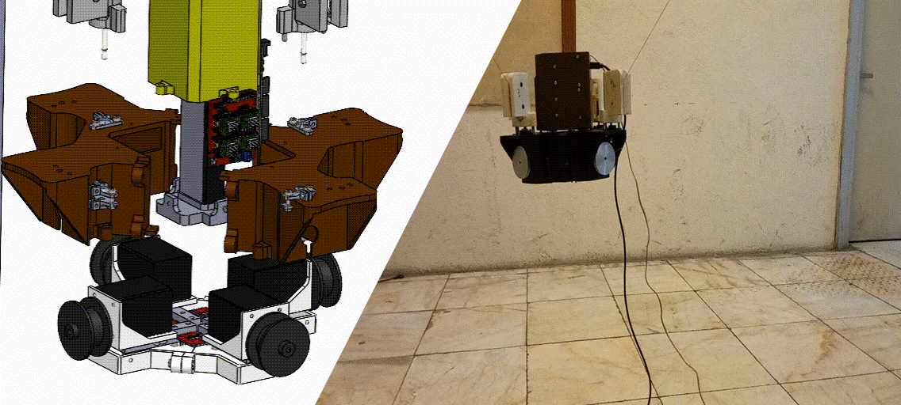

Projects
Motion Planning for a Deployable Under-Actuated Cable-Driven-Parallel-Robot
M.Sc. Final Project
Description: This project focused on developing efficient motion planning algorithms for a deployable under-actuated cable-driven parallel robot.
Key achievements:
- Implemented novel trajectory planning techniques
- Optimized robot performance for various deployment scenarios
- Conducted extensive simulations and real-world tests
Technologies used: Python, ROS, MATLAB
Kinematic Calibration of a Spherical Parallel Robot
Research Project
Description: Developed a kinematic calibration method for a spherical parallel robot with an application to eye surgery.
Key achievements:
- Implemented a novel calibration algorithm
- Improved robot accuracy for precise medical applications
- Published results in a conference paper
Technologies used: MATLAB, C++
Graph-based Calibration Method for Large Scale Suspended CDPRs
Research Project
Description: Developed a novel graph-based calibration method for large scale suspended Cable-Driven Parallel Robots (CDPRs) considering cable-sag.
Key achievements:
- Created a new approach to CDPR calibration
- Accounted for cable-sag in large-scale robots
- Improved accuracy and reliability of CDPRs
Technologies used: Python, MATLAB, Graph Theory